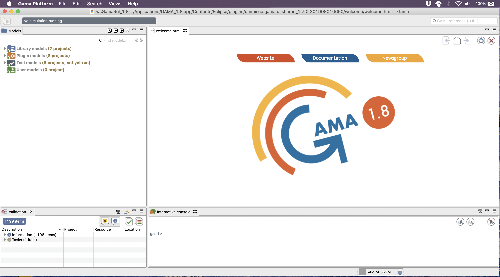

GAMA é uma plataforma de simulação que visa fornecer a especialistas de campo, modeladores e cientistas da computação um ambiente completo de modelagem e desenvolvimento de simulação para a construção de simulações multiagentes espacialmente explícitas. Ele foi desenvolvido pela equipe de pesquisa vietnamita-francesa MSI (localizada em IFI, Hanoi, e parte da IRD / SU International Research Unit UMMISCO) de 2007 a 2010, e agora é desenvolvido por um consórcio de parceiros acadêmicos e industriais liderados pela UMMISCO, entre as quais a Universidade de Rouen, França, a Universidade de Toulouse 1, França, a Universidade de Orsay, França, a Universidade de Can Tho, Vietnã, a Universidade Nacional de Hanoi, EDF R&D, França e CEA LISC, França.
Página de boas-vindas
Assim que o espaço de trabalho for criado, o GAMA será aberto e você verá sua primeira janela . GAMA é baseado no Eclipse e reutiliza a maioria de suas metáforas visuais para organizar o trabalho do modelador. A janela principal é então composta por várias partes , que podem ser visualizações ou editores , e são organizadas em uma perspectiva . GAMA propõe 2 perspectivas principais: Modelagem , dedicada à criação de modelos, e Simulação , dedicada à sua execução e exploração. Outras perspectivas estão disponíveis se você usar modelos compartilhados.
A perspectiva padrão na qual o GAMA é aberto é Modelagem . É composto por uma área central onde os editores GAML são exibidos, que é circundada por uma visualização do Navigator no lado esquerdo da janela, uma visualização Outline (vinculada ao editor aberto), a visualização Problems, que indica erros e avisos presente nos modelos armazenados na área de trabalho e em um console interativo, que permite ao modelador experimentar algumas expressões e obter um resultado imediato.
Na ausência de modelos abertos anteriormente, GAMA exibirá uma página de boas - vindas (na verdade, uma página da web), a partir da qual você pode encontrar links para o site, documentação atual, tutoriais, etc. Esta página pode ser mantida aberta (por exemplo, se você quiser para exibir a documentação ao editar modelos), mas também pode ser fechado com segurança (e reaberto mais tarde no menu "Visualizações").